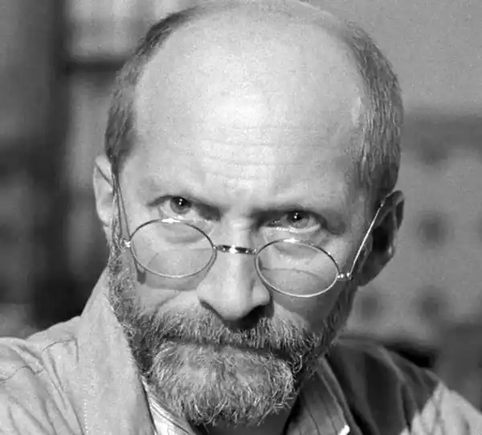
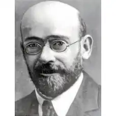
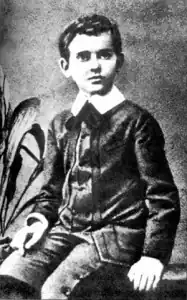
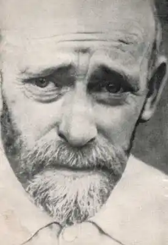
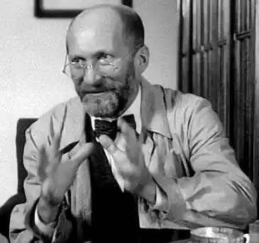

(22.07.1878 — 06.08.1942)
Януш Корчак (Janusz Korczak) народився в 1878-му, за іншими джерелами — в 1879 році, у Варшаві (Warsaw, Congress Poland, Russian Empire). Януш Корчак – це псевдонім, а справжнє його ім'я Генрик Гольдшмит (Henryk Goldszmit). Батько його, Юзеф Гольдшмідт (Józef Goldszmit), був вельми шановним адвокатом, сім'я його була з єврейської інтелектуальної середовища, і вдома хлопчика називали на польський манер Генриком. Втім, пізніше він згадував у своєму щоденнику, що ще його називали ‘растяпой' і ‘дурнем', і тільки одна бабуся вірила, що її онук неодмінно стане великим ученим.
Навчався Януш у російській гімназії (Варшава належала тоді до Російської імперії), і викладання в цьому закладі йшло досить жорстко. Вже з 15-річного віку Генрик, який робив непогані успіхи в навчанні, почав підробляти репетиторством – похитнулося здоров'я батька вимагало багато грошей. У 1898-му Корчак став студентом медичного факультету Університету Варшави (University of Warsaw), і до 1903 року він вже отримав диплом лікаря. До цього моменту Корчак вже зацікавився дитячими установами – школами і лікарнями, і саме педіатрія стала справою всього його життя. Крім того, в той ранній період Корчак вже писав для декількох польських газет. Під час російсько-японської війни в 1905-1906 роках він служив в якості військового лікаря. Одночасно Корчак писав для дітей, і незабаром його книги ‘Дитя вітальні' (‘Dziecko salonu') і ‘Діти вулиці' (‘Dzieci ulicy') принесли йому чималу популярність. Після 1910 року Януш Корчак прийняв рішення залишити медичну практику і цілком зайнявся своїм проектом – він став засновником ‘Будинку сиріт' для єврейських дітей. Так, у будинку 92 на вулиці Крохмальной (The Krochmalna Street) у Варшаві він залишався незмінним директором все своє життя. Підтримувалося заклад філантропами, однак Корчак зумів бути повністю самостійним педагогічної та адміністративної діяльності Будинку. Авторитет педагога і педіатра ріс, і незабаром Корчак вже працював над створенням Будинку для польських дітей на Україні, а в роки війни він знову працював польовим лікарем. Відомо, що педагогічні прийоми Корчака були новаторськими і навіть у чомусь революційними. Так, він ввів у своєму Будинку дитяче самоврядування, а також дитячий товариський суд. В його Домі не було місця насильству, нерівності, несправедливості. Пізніше про нього сказали, що він ‘створював дитячу республіку… крихітна ядерце рівності, справедливості всередині світу, побудованого на пригніченні'. Відомий Януш Корчак і своєї сіоністської діяльністю – він брав участь вв Другому Сіоністському конгресі, а лідера цього руху, Теодора Герцля (Theodor Herzl), він безмірно поважав і по-справжньому схилявся перед ним. З приходом нацистів і зростанням антисемітизму в Європі Корчак шукав для себе шляхи виїхати, але його стримували неможливість кинути своїх сиріт-вихованців. Так, разом зі своїм "Будинком сиріт' він був переміщений в 1940 році у Варшавське гетто. Незважаючи на те, що серед його друзів і шанувальників було безліч неєвреїв, які пропонували йому допомогу, Корчак вважав за краще залишитися в гетто. Відомо, що в той важкий час він самовіддано дбав про ‘своїх' дітей – діставав для них їжу, одяг, ліки. У 1942-му, за наказом про депортацію євреїв, Януш Корчак, а також близько 200 дітей і його найближча колега і подруга Стефанія Вільчинська (Stefania Wilczyńska), були занурені у вагони і відправлені в сумно відомий концентраційний табір Треблінка (Treblinka extermination camp). Відомо, що навіть в останній момент Януш мав можливість вибратися, однак він все ж залишився, і разом з усіма розділив сумну долю в газовій камері. Щороку 23 березня, в пам'ять про Януше Корчака і всіх убитих дітей, в Білорусії і Польщі запускають повітряного змія. Сьогодні серед пережили Голокост є вихованці Корчака, які пам'ятають свого педагога і не дають згаснути пам'яті про нього. Після себе Януш Корчак залишив кілька книг, серед яких, крім вже названих ‘Діти вулиці' і ‘Дитя вітальні', такі книги, як "Літо в Михалувке' (‘Mośki, Joski i Srule'), ‘Король Мацюсь Перший' (‘King Matt the First') та інші. Крім художніх, педіатр і педагог Корчак залишив безліч професійних праць, серед яких – ‘Виховні моменти' (‘Momenty wychowawcze'), ‘Як любити дитину' (‘Jak kochać dziecko'), ‘Право дитини на повагу' (‘Prawo dziecka do szacunku'), ‘Жартівлива педагогіка' (‘Pedagogika żartobliwa') і багато інших. ‘Добра в тисячу разів більше, ніж зла. Ласкаво сильно і незламно. Неправда, що легше зіпсувати, ніж виправити', — писав Януш Корчак у своєму щоденнику.